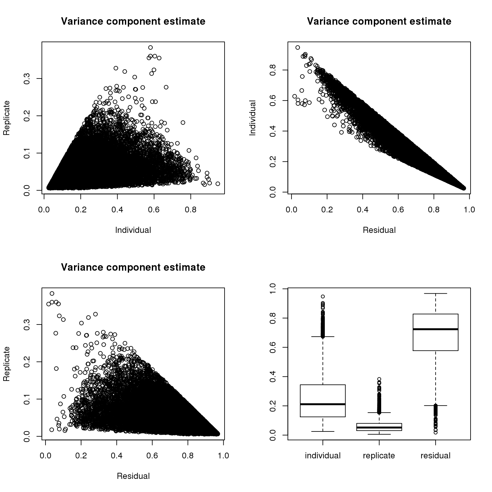

Additional analysis for the manuscript
2016-04-27
Last updated: 2016-04-29
Code version: 1e1b562e686b0c0a4bfc4c813f05de32b5077b40
library("dplyr")
library("ggplot2")
library("cowplot")
library("lmtest")
library("lme4")
source("functions.R")Basic framework
Questions
- Concentration vs. total molecule-count (ENSG)
(Our study design allows us to investigate…)
total molecule-count ~ Concentration
- Molecule-to-read conversion rate (ENSG, ERCC)
(We explored…)
total molecule-count ~ read
- total ERCC molecule-count and total ENSG molecule-count
(Could we account…)
total ENSG molecule-count ~ total ERCC molecule-count
- Percent variation explained by individual and replicate effect in ENSG and ERCC
(As a first step…)
Input
Input filtered annotation.
anno_filter <- read.table("../data/annotation-filter.txt", header = TRUE,
stringsAsFactors = FALSE)
head(anno_filter) individual replicate well batch sample_id
1 NA19098 r1 A01 NA19098.r1 NA19098.r1.A01
2 NA19098 r1 A02 NA19098.r1 NA19098.r1.A02
3 NA19098 r1 A04 NA19098.r1 NA19098.r1.A04
4 NA19098 r1 A05 NA19098.r1 NA19098.r1.A05
5 NA19098 r1 A06 NA19098.r1 NA19098.r1.A06
6 NA19098 r1 A07 NA19098.r1 NA19098.r1.A07Input filtered molecule counts.
molecules_filter <- read.table("../data/molecules-filter.txt", header = TRUE,
stringsAsFactors = FALSE)
molecules_filter_ENSG <- molecules_filter[grep("ERCC", rownames(molecules_filter), invert = TRUE), ]
stopifnot(ncol(molecules_filter) == nrow(anno_filter),
colnames(molecules_filter) == anno_filter$sample_id)Input filtered read counts
reads_filter <- read.table("../data/reads-filter.txt", header = TRUE,
stringsAsFactors = FALSE)
reads_filter_ENSG <- reads_filter[grep("ERCC", rownames(reads_filter), invert = TRUE), ]
stopifnot(all.equal(colnames(reads_filter_ENSG),
colnames(molecules_filter_ENSG)))Input quality control file. Filter cells to match cells in molecules_filter.
qc <- read.table("../data/qc-ipsc.txt", header = TRUE,
stringsAsFactors = FALSE)
qc$sample_id <- with(qc, paste0(individual, ".", replicate, ".", well))
qc_filter <- qc[match(anno_filter$sample_id, qc$sample_id), ]
stopifnot(all.equal(qc_filter$sample_id, anno_filter$sample_id))Input standardized molecule counts.
molecules_cpm <- read.table("../data/molecules-cpm.txt", header = TRUE,
stringsAsFactors = FALSE)
stopifnot(ncol(molecules_cpm) == nrow(anno_filter),
colnames(molecules_cpm) == anno_filter$sample_id)Input Poisson GLM transformed molecule counts per million.
molecules_cpm_trans <- read.table("../data/molecules-cpm-trans.txt", header = TRUE,
stringsAsFactors = FALSE)
stopifnot(ncol(molecules_cpm_trans) == nrow(anno_filter),
colnames(molecules_cpm_trans) == anno_filter$sample_id)Input final batch-corrected molecule counts per million.
molecules_final <- read.table("../data/molecules-final.txt", header = TRUE,
stringsAsFactors = FALSE)
stopifnot(ncol(molecules_final) == nrow(anno_filter),
colnames(molecules_final) == anno_filter$sample_id)Concentration vs. total molecule-count (ENSG)
As we try to understand the general relationships between sequencing results and cellular mRNA content, we remove outlier batches. NA19098 replicate 1 failed the quantification of the concentration of the single cells and was hence removed. Because NA19098 concentration is only quantified in one replicate, we removed NA19098 from analysis involving batch differences and concentration.
anno_single <- anno_filter
ercc_index <- grepl("ERCC", rownames(molecules_filter))
anno_single$total_molecules_gene = colSums(molecules_filter[!ercc_index, ])
anno_single$total_molecules_ercc = colSums(molecules_filter[ercc_index, ])
anno_single$total_molecules = colSums(molecules_filter)
anno_single$num_genes = apply(molecules_filter[!ercc_index, ], 2, function(x) sum(x > 0))
anno_single$concentration <- qc_filter$concentration[match(anno_single$sample_id, qc_filter$sample_id)]
anno_single <- anno_single %>% filter(individual != "NA19098")
anno_single$individual <- as.factor(anno_single$individual)
anno_single$replicate <- as.factor(anno_single$replicate)fit <- lmer(total_molecules_gene ~ concentration + individual +
(1|individual:replicate),
data = anno_single)
fit_1 <- lm(total_molecules_gene ~ concentration + individual,
data = anno_single)
fit_2 <- lmer(total_molecules_gene ~ concentration + (1|individual:replicate),
data = anno_single)
# significance of individual effect
lrtest(fit_2, fit)Likelihood ratio test
Model 1: total_molecules_gene ~ concentration + (1 | individual:replicate)
Model 2: total_molecules_gene ~ concentration + individual + (1 | individual:replicate)
#Df LogLik Df Chisq Pr(>Chisq)
1 4 -4537.6
2 5 -4526.1 1 23.086 1.549e-06 ***
---
Signif. codes: 0 '***' 0.001 '**' 0.01 '*' 0.05 '.' 0.1 ' ' 1# significance of replicate effect
anova(fit, fit_1)refitting model(s) with ML (instead of REML)Data: anno_single
Models:
fit_1: total_molecules_gene ~ concentration + individual
fit: total_molecules_gene ~ concentration + individual + (1 | individual:replicate)
Df AIC BIC logLik deviance Chisq Chi Df Pr(>Chisq)
fit_1 4 9118.3 9134.4 -4555.1 9110.3
fit 5 9112.0 9132.2 -4551.0 9102.0 8.2633 1 0.004045 **
---
Signif. codes: 0 '***' 0.001 '**' 0.01 '*' 0.05 '.' 0.1 ' ' 1Reads to molecule conversion efficiency
Prepare ERCC data
reads_ERCC <- reads_filter[grep("ERCC", rownames(reads_filter),
invert = FALSE), ]
molecules_ERCC <- molecules_filter[grep("ERCC", rownames(molecules_filter),
invert = FALSE), ]
total_counts_ERCC <- data.frame(total_reads = colSums(reads_ERCC),
total_molecules = colSums(molecules_ERCC))
total_counts_ERCC$conversion <- with(total_counts_ERCC,
total_molecules/total_reads)
total_counts_ERCC$individual <- as.factor(anno_filter$individual[match(rownames(total_counts_ERCC),
anno_filter$sample_id)])
total_counts_ERCC$replicate <- as.factor(anno_filter$replicate[match(rownames(total_counts_ERCC),
anno_filter$sample_id)])Prepare ENSG data
reads_ENSG <- reads_filter[grep("ERCC", rownames(reads_filter),
invert = TRUE), ]
molecules_ENSG <- molecules_filter[grep("ERCC", rownames(molecules_filter),
invert = TRUE), ]
total_counts_ENSG <- data.frame(total_reads = colSums(reads_ENSG),
total_molecules = colSums(molecules_ENSG))
total_counts_ENSG$conversion <- with(total_counts_ENSG,
total_molecules/total_reads)
total_counts_ENSG$individual <- as.factor(anno_filter$individual[match(rownames(total_counts_ENSG),
anno_filter$sample_id)])
total_counts_ENSG$replicate <- as.factor(anno_filter$replicate[match(rownames(total_counts_ENSG),
anno_filter$sample_id)])ENSG
fit <- lmer(log2(total_molecules) ~ log2(total_reads) + individual +
(1|individual:replicate),
data = total_counts_ENSG)
fit_1 <- lm(log2(total_molecules) ~ log2(total_reads) + individual,
data = total_counts_ENSG)
fit_2 <- lmer(log2(total_molecules) ~ log2(total_reads) +
(1|individual:replicate),
data = total_counts_ENSG)
# significance of individual effect
lrtest(fit_2, fit)Likelihood ratio test
Model 1: log2(total_molecules) ~ log2(total_reads) + (1 | individual:replicate)
Model 2: log2(total_molecules) ~ log2(total_reads) + individual + (1 |
individual:replicate)
#Df LogLik Df Chisq Pr(>Chisq)
1 4 290.08
2 6 295.46 2 10.76 0.004608 **
---
Signif. codes: 0 '***' 0.001 '**' 0.01 '*' 0.05 '.' 0.1 ' ' 1# significance of replicate effect
anova(fit, fit_1)refitting model(s) with ML (instead of REML)Data: total_counts_ENSG
Models:
fit_1: log2(total_molecules) ~ log2(total_reads) + individual
fit: log2(total_molecules) ~ log2(total_reads) + individual + (1 |
fit: individual:replicate)
Df AIC BIC logLik deviance Chisq Chi Df Pr(>Chisq)
fit_1 5 -548.13 -526.45 279.06 -558.13
fit 6 -599.64 -573.63 305.82 -611.64 53.512 1 2.57e-13 ***
---
Signif. codes: 0 '***' 0.001 '**' 0.01 '*' 0.05 '.' 0.1 ' ' 1ERCC
fit <- lmer(log2(total_molecules) ~ log2(total_reads) + individual +
(1|individual:replicate),
data = total_counts_ERCC)
fit_1 <- lm(log2(total_molecules) ~ log2(total_reads) + individual,
data = total_counts_ERCC)
fit_2 <- lmer(log2(total_molecules) ~ log2(total_reads) +
(1|individual:replicate),
data = total_counts_ERCC)
# significance of individual effect
lrtest(fit_2, fit)Likelihood ratio test
Model 1: log2(total_molecules) ~ log2(total_reads) + (1 | individual:replicate)
Model 2: log2(total_molecules) ~ log2(total_reads) + individual + (1 |
individual:replicate)
#Df LogLik Df Chisq Pr(>Chisq)
1 4 275.21
2 6 277.14 2 3.8665 0.1447# significance of replicate effect
anova(fit, fit_1)refitting model(s) with ML (instead of REML)Data: total_counts_ERCC
Models:
fit_1: log2(total_molecules) ~ log2(total_reads) + individual
fit: log2(total_molecules) ~ log2(total_reads) + individual + (1 |
fit: individual:replicate)
Df AIC BIC logLik deviance Chisq Chi Df Pr(>Chisq)
fit_1 5 -223.60 -201.92 116.80 -233.60
fit 6 -556.77 -530.76 284.38 -568.77 335.17 1 < 2.2e-16 ***
---
Signif. codes: 0 '***' 0.001 '**' 0.01 '*' 0.05 '.' 0.1 ' ' 1total ENSG molecule-count and total ERCC molecule-count
Prepare data
anno_temp <- anno_filter
anno_temp$ensg_total_count <-
colSums(molecules_filter[grep("ERCC",
rownames(molecules_filter), invert = FALSE), ])
anno_temp$ercc_total_count <-
colSums(molecules_filter[grep("ERCC",
rownames(molecules_filter), invert = TRUE), ])First, we assess total ERCC molecule-count beteween individuals and replicates.
fit <- lmer(log2(ercc_total_count) ~ individual +
(1|individual:replicate),
data = anno_temp)
fit_1 <- lm(log2(ercc_total_count) ~ individual,
data = anno_temp)
fit_2 <- lmer(log2(ercc_total_count) ~ 1 +
(1|individual:replicate),
data = anno_temp)
# significance of individual effect
lrtest(fit_2, fit)Likelihood ratio test
Model 1: log2(ercc_total_count) ~ 1 + (1 | individual:replicate)
Model 2: log2(ercc_total_count) ~ individual + (1 | individual:replicate)
#Df LogLik Df Chisq Pr(>Chisq)
1 3 -138.78
2 5 -136.23 2 5.1014 0.07803 .
---
Signif. codes: 0 '***' 0.001 '**' 0.01 '*' 0.05 '.' 0.1 ' ' 1# significance of replicate effect
anova(fit, fit_1)refitting model(s) with ML (instead of REML)Data: anno_temp
Models:
fit_1: log2(ercc_total_count) ~ individual
fit: log2(ercc_total_count) ~ individual + (1 | individual:replicate)
Df AIC BIC logLik deviance Chisq Chi Df Pr(>Chisq)
fit_1 4 281.21 298.55 -136.60 273.21
fit 5 270.03 291.70 -130.01 260.03 13.181 1 0.0002828 ***
---
Signif. codes: 0 '***' 0.001 '**' 0.01 '*' 0.05 '.' 0.1 ' ' 1Second, we perform the same analysis on total ENSG molecule-counts.
fit <- lmer(log2(ensg_total_count) ~ individual +
(1|individual:replicate),
data = anno_temp)
fit_1 <- lm(log2(ensg_total_count) ~ individual,
data = anno_temp)
fit_2 <- lmer(log2(ensg_total_count) ~ 1 +
(1|individual:replicate),
data = anno_temp)
# significance of individual effect
lrtest(fit_2, fit)Likelihood ratio test
Model 1: log2(ensg_total_count) ~ 1 + (1 | individual:replicate)
Model 2: log2(ensg_total_count) ~ individual + (1 | individual:replicate)
#Df LogLik Df Chisq Pr(>Chisq)
1 3 254.98
2 5 256.73 2 3.5097 0.1729# significance of replicate effect
anova(fit, fit_1)refitting model(s) with ML (instead of REML)Data: anno_temp
Models:
fit_1: log2(ensg_total_count) ~ individual
fit: log2(ensg_total_count) ~ individual + (1 | individual:replicate)
Df AIC BIC logLik deviance Chisq Chi Df Pr(>Chisq)
fit_1 4 -86.97 -69.63 47.485 -94.97
fit 5 -510.93 -489.25 260.463 -520.93 425.96 1 < 2.2e-16 ***
---
Signif. codes: 0 '***' 0.001 '**' 0.01 '*' 0.05 '.' 0.1 ' ' 1Second, we include total ENSG molecule-count in the model of total ERCC molecule-count in addition to individual and replicate factors.
ERCC ~ ENSG
fit <- lmer(log2(ercc_total_count) ~ log2(ensg_total_count) + individual +
(1|individual:replicate),
data = anno_temp)
fit_1 <- lm(log2(ercc_total_count) ~ log2(ensg_total_count) + individual,
data = anno_temp)
fit_2 <- lmer(log2(ercc_total_count) ~ log2(ensg_total_count) +
(1|individual:replicate),
data = anno_temp)
# significance of individual effect
lrtest(fit_2, fit)Likelihood ratio test
Model 1: log2(ercc_total_count) ~ log2(ensg_total_count) + (1 | individual:replicate)
Model 2: log2(ercc_total_count) ~ log2(ensg_total_count) + individual +
(1 | individual:replicate)
#Df LogLik Df Chisq Pr(>Chisq)
1 4 -66.621
2 6 -66.770 2 0.2977 0.8617# significance of replicate effect
anova(fit, fit_1)refitting model(s) with ML (instead of REML)Data: anno_temp
Models:
fit_1: log2(ercc_total_count) ~ log2(ensg_total_count) + individual
fit: log2(ercc_total_count) ~ log2(ensg_total_count) + individual +
fit: (1 | individual:replicate)
Df AIC BIC logLik deviance Chisq Chi Df Pr(>Chisq)
fit_1 5 224.79 246.46 -107.39 214.79
fit 6 134.98 160.99 -61.49 122.98 91.806 1 < 2.2e-16 ***
---
Signif. codes: 0 '***' 0.001 '**' 0.01 '*' 0.05 '.' 0.1 ' ' 1Percent variation per gene
individual <- as.factor(anno_filter$individual)
replicate <- as.factor(anno_filter$replicate)
library(blme)
## blme, Wishart prior, change coding
blme_varcomp <- lapply( 1:NROW(molecules_filter_ENSG), function(i) {
value <- unlist(log2(molecules_filter_ENSG[i, ]+1))
fit_try <- tryCatch( fit <- blmer(value ~ 1|individual/replicate,
cov.prior = wishart,
resid.prior = invgamma),
condition = function(c) c)
if(inherits(fit_try, "condition")){
var_foo <- rep(NA, 3)
return(var_foo)
}
if(!inherits(fit_try, "condition")){
var_foo <- as.data.frame(VarCorr(fit_try))[,4]
var_foo <- var_foo[c(2,1,3)]
var_foo
}
})
blme_varcomp <- do.call(rbind, blme_varcomp)
rownames(blme_varcomp) <- rownames(molecules_filter_ENSG)
colnames(blme_varcomp) <- c("individual","replicate","residual")
save(blme_varcomp,
file = "../data/blme-variance.rda")Standardardize variance components such that for each gene the variance component estimates sum up to 1. Because variance of sequencing counts depend on the dynamic range, we avoid biased comparison of variance estimates when comparing across genes, by the action of standarizing per gene variance components by the total of variance estimates.
load("../data/blme-variance.rda")
blme_varcomp_norm <- (blme_varcomp/rowSums(blme_varcomp))
par(mfrow = c(2,2))
plot(blme_varcomp_norm[,1], blme_varcomp_norm[,2],
xlab = "Individual",
ylab = "Replicate",
main = "Variance component estimate")
plot(blme_varcomp_norm[,3], blme_varcomp_norm[,1],
xlab = "Residual",
ylab = "Individual",
main = "Variance component estimate")
plot(blme_varcomp_norm[,3], blme_varcomp_norm[,2],
xlab = "Residual",
ylab = "Replicate",
main = "Variance component estimate")
boxplot(blme_varcomp_norm)
Compare individual versus replicate variance estimates.
summary(blme_varcomp_norm) individual replicate residual
Min. :0.02494 Min. :0.00552 Min. :0.01755
1st Qu.:0.12481 1st Qu.:0.03089 1st Qu.:0.57745
Median :0.21108 Median :0.05178 Median :0.72380
Mean :0.25177 Mean :0.06003 Mean :0.68819
3rd Qu.:0.34422 3rd Qu.:0.08011 3rd Qu.:0.82784
Max. :0.94753 Max. :0.38313 Max. :0.96808
NA's :221 NA's :221 NA's :221 # Kruskal wallis rank sum test to compare
# proportions of variance explained due to individual
# versus due to replicate
kruskal.test(c(blme_varcomp_norm[,1], blme_varcomp_norm[,2]) ~
rep(c(1,2), each = NROW(blme_varcomp_norm)) )
Kruskal-Wallis rank sum test
data: c(blme_varcomp_norm[, 1], blme_varcomp_norm[, 2]) by rep(c(1, 2), each = NROW(blme_varcomp_norm))
Kruskal-Wallis chi-squared = 14185, df = 1, p-value < 2.2e-16Correlation between and within batches
Code for computing correlation between cells within batches and between batches.
#' molecules_input <- molecules_filter_ENSG
#' annotation <- anno_filter
compute_corr_batch <- function(molecules_input, annotation) {
cor_mat <- cor(molecules_input, method = "spearman")
batch <- unique(annotation$batch)
individual <- unique(annotation$individual)
# same individual, within batch
corr_same_ind_within_batch <-
lapply(1:length(individual), function(i) {
batch <-
unique(annotation$batch[annotation$individual == individual[i]])
corr_batch <- lapply(1:length(batch), function(i) {
df <- cor_mat[annotation$batch == batch[i],
annotation$batch == batch[i]]
df[upper.tri(df, diag = FALSE)]
})
unlist(corr_batch)
})
# same individual, between replicates
corr_same_ind_between_batch <-
lapply(1:length(individual), function(i) {
batch <-
unique(annotation$batch[annotation$individual == individual[i]])
submat <- lapply(1:(length(batch)-1), function(i) {
submat0 <- lapply(2:length(batch), function(j) {
df <- cor_mat[annotation$batch == batch[i],
annotation$batch == batch[j]]
df[upper.tri(df, diag = FALSE)]
})
unlist(submat0)
})
unlist(submat)
})
# different individual
corr_diff_ind_between_batch <-
lapply(1:(length(individual)-1), function(i) {
if (i == 1) {
batch <-
unique(annotation$batch[annotation$individual == individual[i]])
batch_other <-
unique(annotation$batch[annotation$individual != individual[i+1]])
}
if (i == 2) {
batch <-
unique(annotation$batch[annotation$individual == individual[i]])
batch_other <-
unique(annotation$batch[annotation$individual == individual[i+1]])
}
submat <- lapply(1:length(batch), function(i) {
submat0 <- lapply(1:length(batch_other), function(j) {
df <- cor_mat[annotation$batch == batch[i],
annotation$batch == batch_other[j]]
df[upper.tri(df, diag = FALSE)]
})
unlist(submat0)
})
unlist(submat)
})
corr_diff_ind_between_batch <- unlist(corr_diff_ind_between_batch)
return( list(corr_same_ind_within_batch = corr_same_ind_within_batch,
corr_same_ind_between_batch = corr_same_ind_between_batch,
corr_diff_ind_between_batch = corr_diff_ind_between_batch) )
}Compute correlation for molecule-count data after filtering.
corr_filter <- compute_corr_batch(molecules_filter_ENSG, anno_filter)
par(mfrow = c(1,1))
boxplot(cbind(corr_filter[[1]][[1]],
corr_filter[[1]][[2]],
corr_filter[[1]][[3]],
corr_filter[[2]][[1]],
corr_filter[[2]][[2]],
corr_filter[[2]][[3]],
corr_filter[[3]]),
main = "Counts",
axes = F)Warning in cbind(corr_filter[[1]][[1]], corr_filter[[1]][[2]],
corr_filter[[1]][[3]], : number of rows of result is not a multiple of
vector length (arg 1)axis(1, at = c(1:7),
labels = c("within-batch-19098",
"within-batch-19101",
"within-batch-19239",
"between-batch-19098",
"between-batch-19101",
"between-batch-19239",
"across-batches"))
axis(2)
Kruskal wallis comparing all between-batch correlations with all within-batch correlations
df <- data.frame(corrs = c(unlist(corr_filter[[1]]),
unlist(corr_filter[[2]])),
label = c(rep(1, length(unlist(corr_filter[[1]]))),
rep(2, length(unlist(corr_filter[[2]])))))
kruskal.test(df$corrs ~ df$label)
Kruskal-Wallis rank sum test
data: df$corrs by df$label
Kruskal-Wallis chi-squared = 2210.8, df = 1, p-value < 2.2e-16# summary statistics of correlations within-batches
# of all three individuals
summary(unlist(corr_filter[[1]])) Min. 1st Qu. Median Mean 3rd Qu. Max.
0.6058 0.7222 0.7434 0.7412 0.7618 0.8319 # summary statistics of correlations between-batches
# of all three individuals
summary(unlist(corr_filter[[2]])) Min. 1st Qu. Median Mean 3rd Qu. Max.
0.6113 0.7080 0.7294 0.7263 0.7475 0.8282 Session information
sessionInfo()R version 3.2.0 (2015-04-16)
Platform: x86_64-unknown-linux-gnu (64-bit)
locale:
[1] LC_CTYPE=en_US.UTF-8 LC_NUMERIC=C
[3] LC_TIME=en_US.UTF-8 LC_COLLATE=en_US.UTF-8
[5] LC_MONETARY=en_US.UTF-8 LC_MESSAGES=en_US.UTF-8
[7] LC_PAPER=en_US.UTF-8 LC_NAME=C
[9] LC_ADDRESS=C LC_TELEPHONE=C
[11] LC_MEASUREMENT=en_US.UTF-8 LC_IDENTIFICATION=C
attached base packages:
[1] stats graphics grDevices utils datasets methods base
other attached packages:
[1] lme4_1.1-10 Matrix_1.2-1 lmtest_0.9-34 zoo_1.7-12 cowplot_0.3.1
[6] ggplot2_1.0.1 dplyr_0.4.2 knitr_1.10.5
loaded via a namespace (and not attached):
[1] Rcpp_0.12.0 magrittr_1.5 splines_3.2.0 MASS_7.3-40
[5] munsell_0.4.2 lattice_0.20-31 colorspace_1.2-6 R6_2.1.1
[9] minqa_1.2.4 stringr_1.0.0 httr_0.6.1 plyr_1.8.3
[13] tools_3.2.0 parallel_3.2.0 grid_3.2.0 nlme_3.1-120
[17] gtable_0.1.2 DBI_0.3.1 htmltools_0.2.6 lazyeval_0.1.10
[21] yaml_2.1.13 assertthat_0.1 digest_0.6.8 nloptr_1.0.4
[25] reshape2_1.4.1 formatR_1.2 bitops_1.0-6 RCurl_1.95-4.6
[29] evaluate_0.7 rmarkdown_0.6.1 stringi_0.4-1 scales_0.2.4
[33] proto_0.3-10